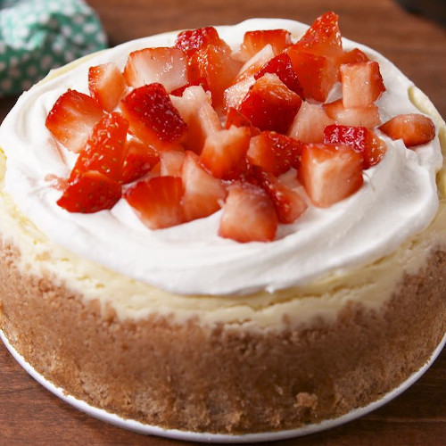

Instant Pot Cheesecake

The Traditional Cheesecake
An easy recipe for a great tasting cheesecake - turns out perfect every time!
Made in a 6qt Instant Pot
Ingredients
- Cooking spray, for pan
- 1 cup crushed graham crackers
- 3 tbsp. butter, melted
- Pinch of salt
- 16oz. (2 blcoks) cream cheese, softened
- ½ cup granulated sugar
- ¼ cup light brown sugar
- ¼ cup sour cream
- 1 tbsp. all-purpose flour
- 1 tsp. pure vanilla extract
- ¼ tsp. kosher salt
- 2 eggs
- Cool Whip, for garnish
- Chopped strawberries, for garnish
Steps
- Make crust: Grease a 6" springform pan with cooking spray. In a medium bowl, combine graham cracker crumbs, melted butter, and salt and mix until mixture is the texture of wet sand. Spread evenly in the bottom and up the side of the pan. Freeze for 20 minutes.
- Make cheesecake: In a large bowl using a hand mixer, beat cream cheese, sugars, sour cream and flour until light and fluffy. Add vanilla and salt and beat until combined. Add eggs, one at time, and beat until just blended. Don’t overmix. Pour batter into springform pan on top of crust.
- Pour 1½ cups water into Instant Pot and place trivet in the bottom. Fold a large piece of foil (about 18”) into thirds to make a long “sling,” and lower it into the pot. Put the springform pan on top and fold the sling.
- Lock the lid in place and select High Pressure. Set timer for 35 minutes. Allow the pressure to release naturally. Remove the cheesecake from the pot using the sling and place on a wire rack to cool for at least an hour.
- Cover springform pan with foil and refrigerate for 4 hours or up to overnight. Spread Cool Whip on top, garnish with chopped strawberries, and serve.